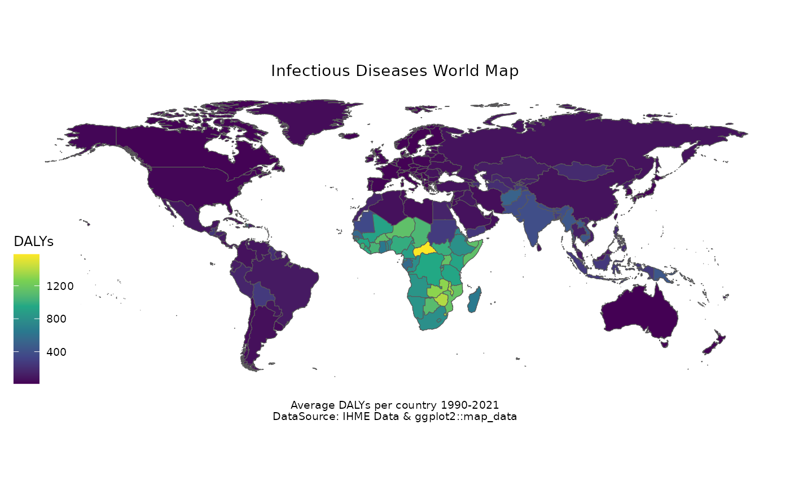

Load the Package
Here is shown the impact of Infectious Disease on DALYs. Data is from the IHME Healthdata website and contains information about 200 locations affected by infectious diseases from 1980 to 2021. The values of the estimated DALYs is the average value per 100 000 population of each country for 37 infectious diseases.
data(idDALY_map_data)The map_data("world") data is used to show the
transformation of the spatial information expressed in long and lat to a
simple feature object. This layer is added for showing the missing
countries that are not considered in the dataset.
library(tidyverse)
library(sf)
world_map <- map_data("world") %>%
filter(!region == "Antarctica") %>%
st_as_sf(
coords = c("long", "lat"),
crs = 4326,
agr = "constant"
) %>%
st_cast("POINT") %>%
group_by(group) %>%
summarise(
geometry = st_combine(geometry),
do_union = F
) %>%
st_cast("POLYGON")
world_map %>%
ggplot() +
geom_sf() +
geom_sf(
data = idDALY_map_data,
aes(fill = DALYs)
) +
labs(
title = "Infectious Diseases World Map",
caption = "Average DALYs per country 1990-2021\nDataSource: IHME Data & ggplot2::map_data"
) +
scale_fill_viridis_c() +
ggthemes::theme_map() +
theme(
plot.title = element_text(hjust = 0.5),
plot.caption = element_text(hjust = 0.5)
)